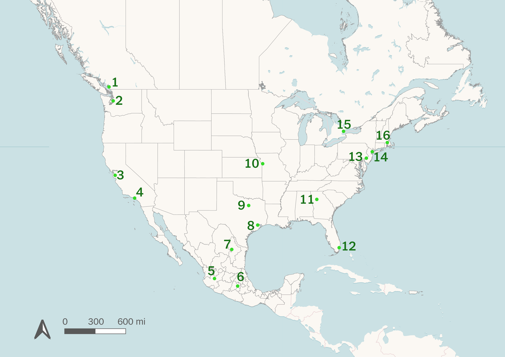
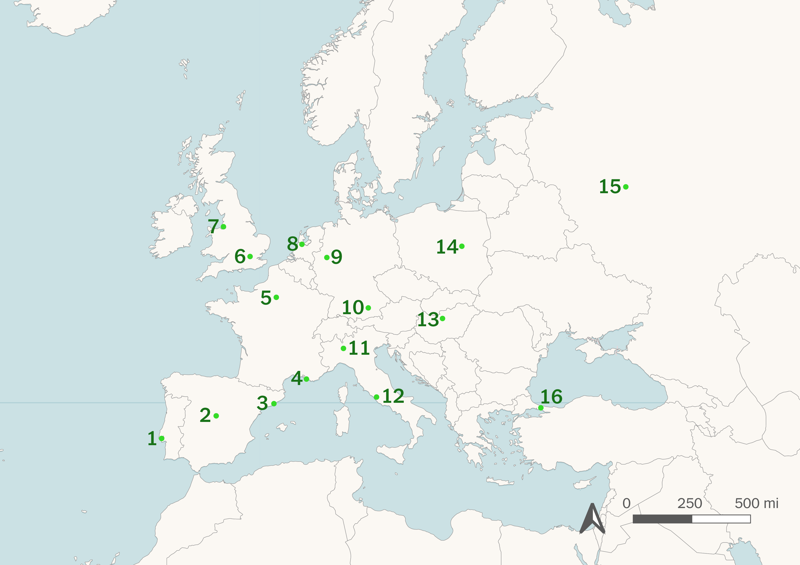
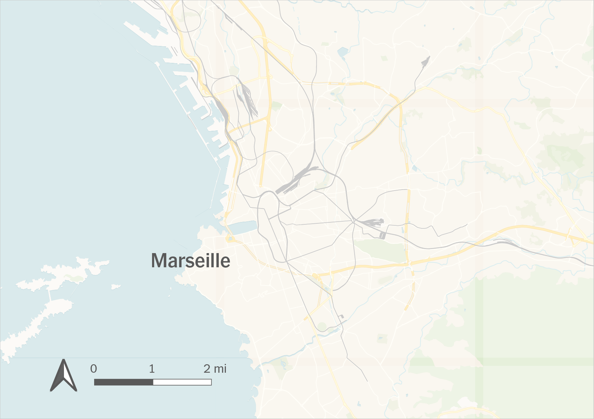
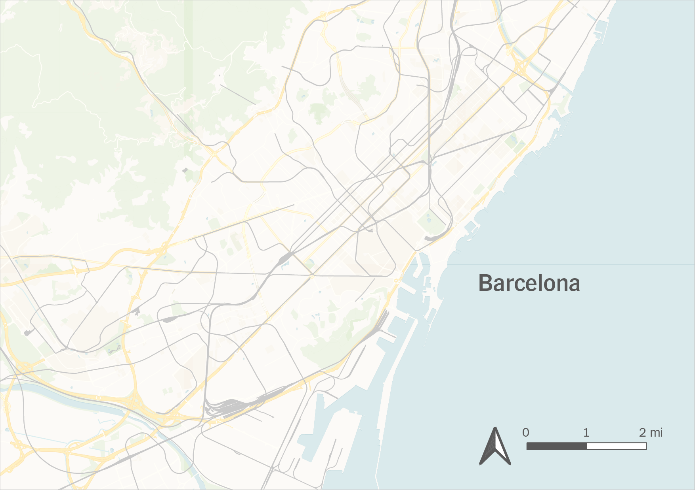
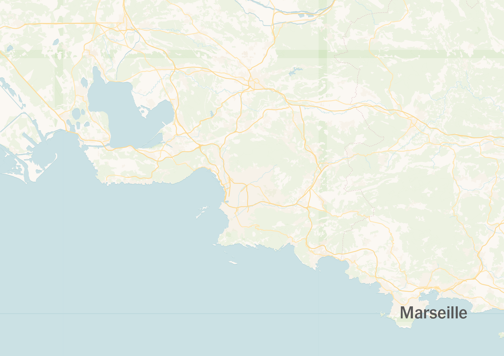
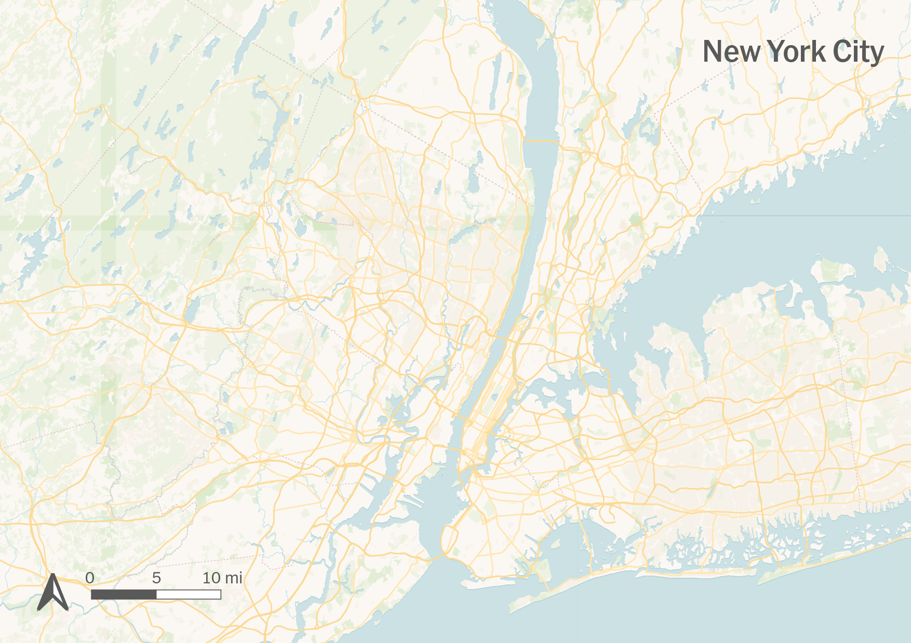
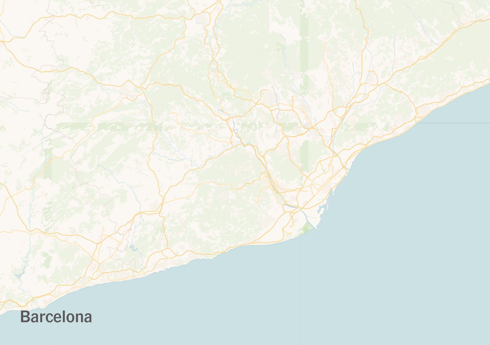
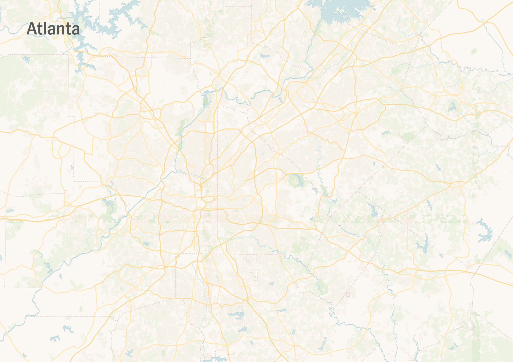

The World Cup is largely regarded as the most prestigious football competition, and perhaps sporting competition, in the world. Held only every 4 years, each event draws millions of spectators to the host country to watch and support their nations. The 2026 World Cup is held between 3 countries — the United States, Canada, and Mexico.
These 3 host nations will split the 16 World Cup stadiums amongst themselves, with 2 in Canada, 3 in Mexico, and 11 in the United States. The locations of these stadiums are shown below.

Yet instead of the usual vigor that comes with a World Cup summer, this year there is an air of uncertaintly. One obvious reason is the unstable political climate of the United States, but another is the lackluster public transportation infrastructure. Most non-Americans are used to taking public transit to and from football matches. In the US however, this is far from ordinary. Lacking the infrastructure needed to move a large number of people between cities and stadiums, most people opt and prefer to drive.
This fact has many Europeans wondering how they are going to get to the World Cup stadiums. In order to illuminate this issue, we are going to compare the public transportation access of the 16 World Cup Stadiums to that of 16 European stadiums. These stadiums were chosen based on relevance and geographic diversity. The locations of these stadiums are shown below.

Olivier Pons is a lifelong Marseille FC supporter, and is also planning on visiting America to support the French national team in their group stage game against Senegal this summer. Although excited for the match, he is a little concerned about the accessibility of MetLife Stadium from downtown Manhattan. To better understand his concerns, let's follow him through his route to a Marseille FC home game.

Olivier's journey to Marseille FC's stadium only takes 20 minutes from downtown Marseille, while getting to MetLife from Manhattan takes around 1 hour. This discrepancy is what makes certain World Cup visitors, who are often used to fast, efficient, public transportation systems, quite uncertain about the overall travel logisitcs.
However, this isn't to say that all of the World Cup stadiums are poorly connected. Some of them are actually much easier to get to than many European stadiums.
Laia Font is a lifelong FC Barcelona supporter, and is also planning on visiting America to support the Spanish national team in their group stage game against Cape Verde this summer. Despite other's concerns about getting the the World Cup stadiums, she has realized that getting to Mercedes-Benz Arena from downtown Atlanta is actually a must faster journey than hers to any FC Barcelona home game at the Spotify Camp Nou. To better understand her perspective, let's follow her through her route to an FC Barcelona home game.

Laia's journey to FC Barcelona's stadium takes over 40 minutes, while getting to Mercedes-Benz Arena from downtown Atlanta is just a 20 minute walk. Laia was quite pleased at this situation, but she is still aware that this level of connectivity is a rare case within the United States.
Moreover, connectivity is not just getting from downtown to the stadiums, but especially for those living in these cities, one should be able to get to the stadium fairly easily from anywhere in the city.
The connectivity of a place often requires 2 factors: how many people can get there and how quickly can they do it. This is especially important for stadiums, since they often host large events with rushes of people going to and from the stadium at the same time. Poor connectivity of a stadium can lead to slow travel times to and from the stadium, but can also impact other travelers in the area going to other destinations.




While these regions may all look somewhat comparable in size, they do not match in population. For example, Manhattan is not covered until we get to 90 minutes, while downtown Marseille and Barcelona are mostly covered by the 30 minute region. Even at 90 minutes, 977,000 is around 50% of Marseille's total metro population, while 4,226,000 is only around 18% of New York's metro population.
Atlanta's population numbers are also quite interesting. While Mercedes-Benz Stadium is in the center of the city, the stadium is not easily accessible for the majority of people in the area even at 90 minutes. This is due to widespread suburban sprawl, which is a feature of many American cities.
Ultimately, it has been well known that American cities cannot compete with European ones when it comes to public transportation and overall connectivity. The Unites States is a much more car-dependent nation, and opts to build large sprawling cities instead of compact ones. Yet, America has also never hosted an event as large and widespread as this year's World Cup. It is still unclear whether America's transportation problems will be an issue the summer, and whether it will become a lesson on human movement and connectivity that future generations can learn from.